Seventeen nodes split in two kinds. The first bunch builds structure: a skeleton (a tree's branches, an L-system's rewriting), or a shape (a leaf, a flower, a crown, a blade of grass, a hill, a rock, a cloud, a mushroom). None of that is pixels yet. Wire any of it into Fill, Stroke, Shade or the 1-Bit family and it becomes art at whatever size the canvas is, because a skeleton and a shape are both resolution independent the same way a Vector Primitive is.
The second bunch is four finished sprites (Tree, Bush, Plant, Fungus Sprite) that do the wiring for you: they grow a structure, cluster a crown, band it from a light angle and outline it, all in one node. Reach for those when you want a tile now. Reach for Branching, Canopy, Grass and the rest when you want to build your own silhouette out of parts, or feed a crown into a Gradient Map instead of a flat light.
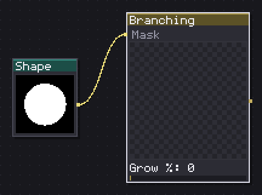
Grows a tree skeleton, branching by levels or colonizing the space inside an envelope.
Two unrelated algorithms behind one skeleton output. Recursive is the classic rule: pick Levels, Children, an Angle and a Length ratio %, and the tree forks the same way at every scale. Two knobs decide the character on top of that: Tropism pulls (positive) or pushes (negative) every new segment back toward the growth axis, so a poplar is a high positive tropism and a weeping willow a negative one. Dominance % hands extra length to whichever branch at a fork points straightest, which is what keeps a trunk reading as a trunk instead of forking into two equal arms.
Colonize is the other algorithm, space colonization against an Envelope (Ellipse, Dome, Cone, Fan, or a wired Mask whose luminance is read as density). Attractors, Influence % and Kill % are the paper's own numbers: more attractors and a tighter kill radius give a denser, twiggier crown.
Grow % is the animation axis in this whole category, a tree rising out of the ground. Feed the skeleton into a Stroke (Round cap and join) to see it, since a raw skeleton has no width of its own outside the pipe model.
In: Mask (image) · Out: skeleton
Parameters
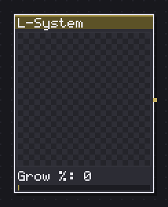
Rewrites turtle symbols into a plant skeleton, from a preset or from rules you type.
The one generator you can type into. Eleven presets (ferns, weeds, seaweed, coral, a bush, six from the Algorithmic Beauty of Plants book) cover most of what an L-system is good for; Preset: Custom opens Iterations and Angle as sliders, and Edit rules... opens a window with the axiom and the rewriting rules as text, for whoever wants to write their own turtle grammar.
Length decay % and Width decay % taper each generation, which is what stops a seven-iteration fern from being a solid mat of same-thickness lines. Push Iterations past 5 or 6 and the Budget (a node budget, not a visual one) starts capping how much of the rewriting actually gets drawn, so a preset that looks sparse at 4 may not gain much going to 7.
Same Grow % axis as Branching, and the same reason to view it through a Stroke rather than a Fill: the output is a skeleton, and a skeleton alone has no area.
In: nothing · Out: skeleton
Parameters
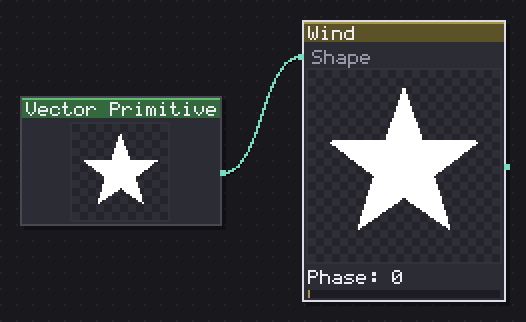
Bends any shape sideways, quadratically with the height above the pivot it is nailed at.
Bends whatever shape is wired in, sideways, by an amount that grows with the square of the height above the Pivot: x += amplitude * h^2 * sin(phase + x * frequency). That squaring is why it reads as a stem bending rather than a picture sliding sideways, the wind at the pivot is zero and grows toward the free end.
Wire in a tuft of Grass, a Vector Text, a Trace of a photograph, anything on a shape wire. Phase is the axis to animate, a full turn is one sway there and back; sweeping Amplitude instead just bends further and further with no return. At the default 25% amplitude the bend is subtle, worth pushing toward 50-60% to see it clearly on a small sprite.
One gotcha worth knowing: the bend is not a matrix, so it cannot ride lazily the way a Transform does. Whatever comes in gets resampled at Detail px first, and a tree or a dense crown wired in benefits from raising that past the default 256 if the bend looks faceted.
In: Shape (shape) · Out: shape
Parameters
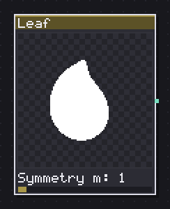
Shapes a leaf from the Gielis superformula or two mirrored curves, with teeth, lobes and veins.
Two unrelated ways to build the blade, picked with Kind. Superformula runs the Gielis formula off one parameter, Symmetry m: 0-1 gives a rounded petal, 2 a classic leaf, 3 and up turns lobed and star-shaped. Sharpness n1, Cosine n2 and Sine n3 reshape the same curve without changing its symmetry count. Blade is the other construction, a drawn silhouette with Widest at % placing the belly and Base choosing a Cuneate (tapered) or Cordate (heart-shaped) base.
Margin and veins apply to both kinds: Serration % and Teeth cut a jagged edge, Lobes and Lobe depth % cut deeper notches, and Veins (Pinnate, Palmate, Parallel) draws the vein pattern independent of the blade. Part (Blade / Veins / Both) is the one to reach for if you want to fill the blade one color and the veins another, which needs two Leaf nodes or two Fill passes off the same veins output.
Grow % shrinks the leaf from its tip, the way Foliate expects a leaf to open.
In: nothing · Out: shape
Parameters
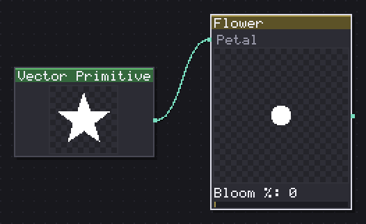
Arranges petals in twisted rings around a seeded centre, opening from bud to full bloom.
Petals ring a center in Layers, each layer twisted by Layer twist and scaled down by Layer scale %, which is what gives a flower depth instead of one flat ring. The default Petal is the superformula petal at m=1; wire a shape into the Petal input (a Leaf node, an imported SVG) to use your own instead.
Center picks None, a plain Disc, or Seeds, which packs dots along a Vogel spiral, the same golden-angle arrangement a real sunflower head uses, so raising Seeds never leaves two dots touching or a visible gap. Bloom % is the node's real axis: at 0 the petals are twisted shut into a bud, at 100 they are open flat. It is worth animating over Grow on other nodes in this category, since a flower opening reads differently from a plant growing.
Note that Center size % only applies once a center is chosen, and Seeds only appears when Center is set to Seeds.
In: Petal (shape) · Out: shape
Parameters
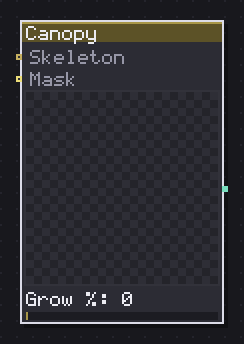
Packs a crown out of clustered puffs, inside an envelope or on the tips of a skeleton.
The rule this node exists to keep is clusters, not noise: everything it draws is copies of one puff silhouette, gathered into Clumps, each clump made of Puffs puffs. That is what makes a crown read as foliage instead of as a filtered noise field once you Shade it into bands.
Envelope (Ellipse, Dome, Cloud, Cone or a wired Mask) decides the outer silhouette when there is no Skeleton wired in. Wire a Branching or an L-System skeleton in instead and the clumps gather at its tips (Tip depth, how many levels back from the very end counts as a tip) rather than inside an abstract envelope, which is the wiring "a crown that follows this specific tree" needs.
Flatten % compresses the whole crown vertically, Underside % trims flat from below (useful once a light angle from Shade starts casting the canopy against a trunk), and Grow % is again the axis that reads best, puffs popping in one by one rather than the crown fading in at once.
In: Skeleton (skeleton), Mask (image) · Out: shape
Parameters
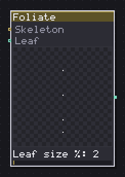
Hangs leaves along a skeleton and on its tips, alternate, opposite or whorled.
Leaves hung along a Skeleton, or on its tips, or both, set by Where. Phyllotaxis decides how many leaves sit at each station along the branch: Alternate is one leaf per station switching sides, Opposite is a pair facing each other, Whorled is three around the stem. Real plants use exactly this vocabulary, and switching it is the fastest way to make the same skeleton read as two different species.
Spacing % only matters when leaves run Along a branch rather than sitting only at the Tips. Size by depth % shrinks leaves further out on the skeleton relative to ones near the trunk, which reads as perspective on a tree crown even at a flat pixel scale. Mirror alternate flips every other leaf so an alternate arrangement does not repeat the exact same silhouette down the stem.
No Grow row here on purpose, since what animates is the skeleton underneath; Leaf size % is what to sweep if you want to show the node's own effect rather than the branch growing.
In: Skeleton (skeleton), Leaf (shape) · Out: shape
Parameters
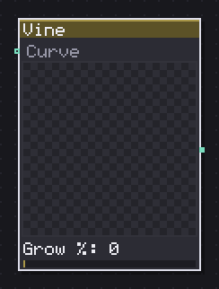
Trails alternate leaves and curling tendrils along a path, growing from one end.
A vine trails from one end of a wired Curve (a Path Source, a Trace, a Vector Shape, or nothing at all, in which case it walks a slack S of its own), leafing alternately and throwing a curling tendril every Tendril every leaves. Set that to 0 to turn tendrils off entirely, since it reads as a numeric switch rather than a mode.
Taper % thins the vine and its leaves toward the free end, which is what stops a vine wrapped around a trellis from reading as a uniform rope. Grow % runs the vine forward along its path, the axis to animate for a plant climbing into frame.
Do not expect much from wiring a closed shape (a Star, a filled Rect) in as the Curve: the node reads it as an outline to walk, and a garland stamped around the rim of a closed blob is not the effect it is built for. It wants an open path.
In: Curve (shape) · Out: shape
Parameters
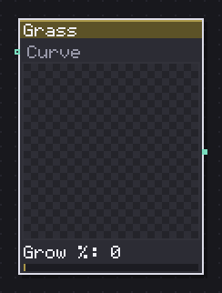
Sows blades along a baseline or a wired curve, gathered into tufts, leaning and curling.
Blades stand on a straight Baseline % by default, or along a wired Curve (a Trace, a Vector Shape, or a Horizon, which is the one cable that turns "grass" into "grass on a hill"). Clumping % gathers blades into tufts instead of spacing them evenly, Lean tilts the whole stand one way and Lean jitter % scatters individual blades around that lean, and Curl % bends the blade tip.
Two rows exist purely to keep grass readable at small sizes: Min gap px keeps blades from merging into a solid green wall when Blades is high, and Min width px floors the blade thickness so it survives an aliased fill instead of rounding away (pair it with One-pixel tip for blades that taper to exactly one pixel rather than fading to nothing). At 32-64 px, thin blades and low thickness values are the ones that vanish first, worth checking the fill at actual size before tuning further.
Grow % raises the blades from the ground, the category's usual axis.
In: Curve (shape) · Out: shape
Parameters
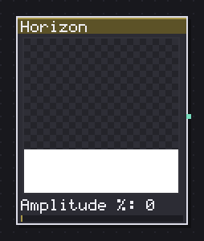
Carves a skyline of hills, ridges, dunes or terraces, tileable and layered for parallax.
A skyline as a pure function, one height per column, never two, which is what makes an aliased Fill of it a proper silhouette instead of an overhang. Mode picks the character: Hills is rounded fBm noise, Mountains folds it at the midpoint so every ridge gets a sharp corner (a peak, not a bump), Dunes warps the domain by its own value so crests lean and the faces they push into steepen, and Cliffs quantizes into Steps flat terraces.
Parallax layer is not cosmetic: stack several Horizon nodes on the same Seed with Parallax layer 0, 1, 2 and they read as one landscape at different distances, each layer's amplitude and detail scaled down automatically rather than as unrelated noise. Tile in X keeps the profile's two edges matching for a scrolling background.
Grass wired to this node's output stands the blades on the terrain instead of on a flat line, which is the recipe this category is built around.
In: nothing · Out: shape
Parameters
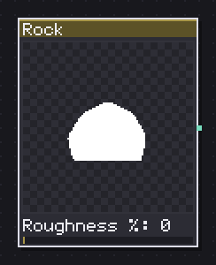
Swells a polygon into a boulder with two octaves of noise, then breaks it into facets.
A regular polygon (Sides) melts into a boulder as Roughness % rises, two octaves of noise doing the melting; Detail % is the amplitude of the finer of the two, so it adds crumble rather than the big lumps roughness gives. Flatten % squashes the whole rock and Jagged % sharpens its silhouette between rounded and chipped.
Part matters more than it looks: Silhouette is a normal filled shape, but Facets and Cracks both come out as lines (a Voronoi cell split and a network of cracks), so they want a Stroke rather than a Fill, a zero-area contour filled is nothing. Facets sets how many cells the Voronoi split makes, Crack amount % how much of that network shows when Part is Cracks.
No Grow row on this one, it is a static form meant to be shaded afterward (wire it into Shade for the light, not into this node).
In: nothing · Out: shape
Parameters
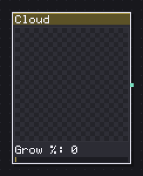
Strings puffs along a spine under a bell profile and slices the base flat.
Puffs threaded along an invisible spine under a bell-shaped profile, Puffs many, each sized by Puff size % and scattered by Jitter %. Flat base % slices the bottom flat, which is most of what separates a cumulus silhouette from a plain blob, push it toward 60-80% for the classic flat-bottomed look.
There is no light or ramp on this node by design, same as Rock: a cloud here is a form, and shading is somebody else's job (Gradient Map reads well against it). Grow % is the axis worth animating, since it reveals the puffs joining one at a time rather than the whole cloud fading in, which is closer to how a cumulus actually builds.
In: nothing · Out: shape
Parameters
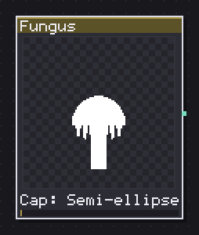
Assembles a mushroom out of cap, stem, gills and spots, each part on its own or all at once.
Cap, stem, gills and spots, each one a part you can draw on its own or all together via Part. Cap picks the silhouette (Semi-ellipse, Cone, Flat, or Superformula for something less regular), sized by Cap width % and Cap height %; none of the three cap rows apply once Part is set to Stem only, since there is no cap to describe.
Stem height % is read by every part regardless, since it decides where the cap sits even when the cap itself is not being drawn. Gills and Spots are counts, not toggles, and are the only hashed part of the mushroom (Seed only shows for Spots or All), so a seed row that seemed to do nothing on a plain cap and stem is not a bug, it has nothing random left to reach.
Everything comes out as one shape, so filling the cap one color and the stem another means running two of these nodes with different Part settings, or reaching for Fungus Sprite instead if you want the coloring done for you.
In: nothing · Out: shape
Parameters
Draws a whole tree: branches, a clustered crown, banded light and a one pixel outline.
The full sprite in one node: Mode carries over Branching's two algorithms but trims the panel to the three or four rows that actually change the silhouette (Levels, Branch angle, Tropism for Recursive; Envelope, Attractors for Colonize), the rest pinned to sane defaults so this stays a one-click tile rather than Branching with extra steps.
Light from and Bands control the shading exactly like Shade elsewhere in the engine, Outline adds a Darker, a flat Colour, or no rim at all. Trunk colour and Leaf colour are the two flat colors before banding; wiring a Ramp in replaces the leaf banding with that ramp's colors instead, which is worth doing for an autumn palette, but wiring a plain noise into Ramp expecting a palette gives a hundred random colors rather than bands, since the whole point of this node is that it bands itself.
Grow % builds the tree, Wind % sways it (through the same quadratic bend Wind uses on its own), and Budget caps how many skeleton nodes Colonize mode is allowed to sow.
In: Ramp (image) · Out: image
Parameters
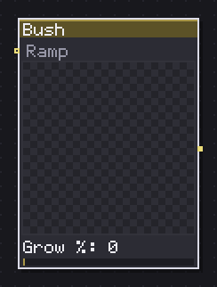
Draws a bush as a clustered dome on the ground, banded from the light, over short twigs.
The same sprite machinery as Tree, aimed at a ground-hugging crown instead of a trunk and canopy: Twigs (1-4) sets how many short stems the puffs cluster around, and there is no branching algorithm to choose, just a height, a twig count and the same clump-and-puff crown Canopy builds elsewhere in the category.
Flatten % matters more here than on Tree, since a bush read from the side is mostly its silhouette against the ground; pushing it up keeps the crown from reading as a floating ball. Same Light from, Bands, Outline, Trunk (here the twig color) and Leaf rows as every sprite in this shelf, and the same Ramp input if you want colored foliage instead of a flat leaf tone.
Budget is lower than Tree's by default (120 against 200), since a bush needs far fewer clumps to read as full.
In: Ramp (image) · Out: image
Parameters
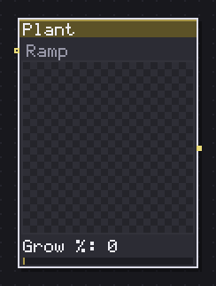
Draws a leafy plant from the side, flowering on its tips, banded from the light.
A stem, leaves and an optional flower on the tips, the smallest of the four finished sprites and the one closest to a single herb rather than a whole scene prop. Stem levels (1-3) branches the stem, Phyllotaxis and Spacing % place the leaves exactly as Foliate does, and Flower on tips turns the tip blossom on or off; Petals and Flower size % only show once it is on.
Leaves is a budget (how many leaf anchors the plant is allowed) more than a count you should expect to hit exactly, since Spacing % and Stem levels both compete for it. Same shading rows as the other three sprites, and the same Ramp input for a palette instead of a flat leaf color.
Grow % raises the whole plant from the ground and opens the flower at the same time, there is no separate bloom control on this node the way there is on the standalone Flower.
In: Ramp (image) · Out: image
Parameters
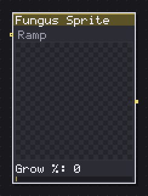
Draws a mushroom with cap, stem, gills and spots coloured and banded from the light.
A colored mushroom out of the same cap, stem, gills and spots as Fungus, minus the Part switch, since a sprite draws all of them at once. Cap, Cap width %, Cap height %, Stem height % and Stem width % shape it exactly as they do on the plain Fungus node.
The one thing worth knowing before reaching for Trunk colour and Leaf colour: gills and spots are painted with the stem color, not the cap color, which is what turns a light cap and a dark stem into a mushroom with dark speckles on its cap using only two color rows instead of four. If you want spotted gills a different shade from the stem itself, this node cannot do it; run Fungus with Part: All and separate Fill passes instead.
Same Light from, Bands, Outline, Grow and Wind rows as the other three sprites, and the same Ramp input in place of the two flat colors.
In: Ramp (image) · Out: image
Parameters